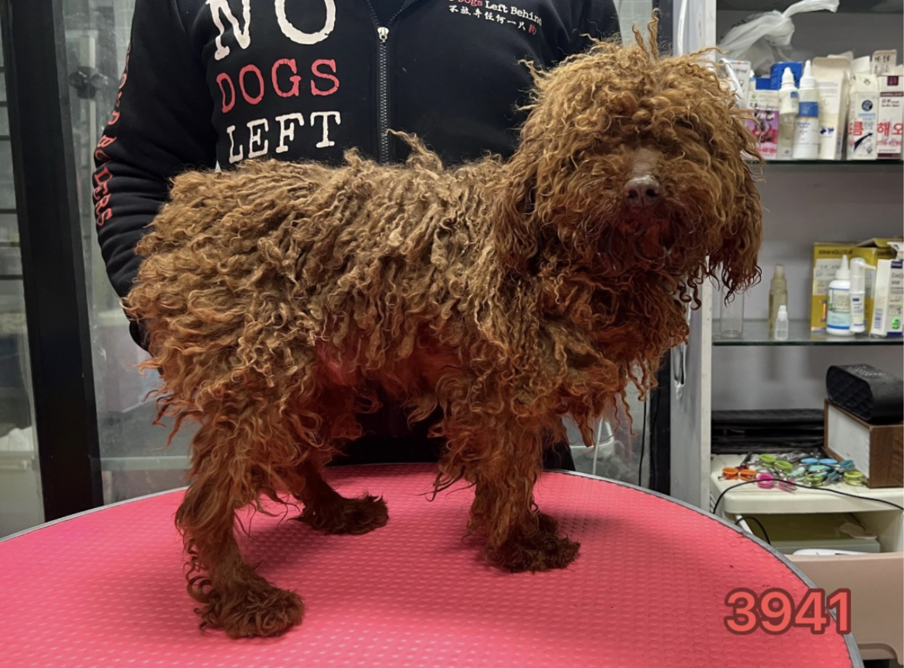

We wanted to rescue.
We’re first-time pet parents living in New York, and when we decided we were ready for a dog, we knew one thing for certain: we wanted to rescue.
But finding one wasn’t as simple as we expected. We searched Petfinder and other adoption websites, visited rescue websites, scrolled through social media pages, and bounced between listing after listing. There were so many incredible dogs looking for homes, but it was surprisingly difficult to simply browse rescue dogs from rescue organizations all in one place.
We also discovered that not everyone calling themselves a rescue actually was one. As first-time pet parents trying to adopt responsibly, figuring out who we could trust was confusing—and honestly, a little scary.
Eventually, after a lot of searching, we found Garmonbozia through No Dogs Left Behind—and everything changed.
